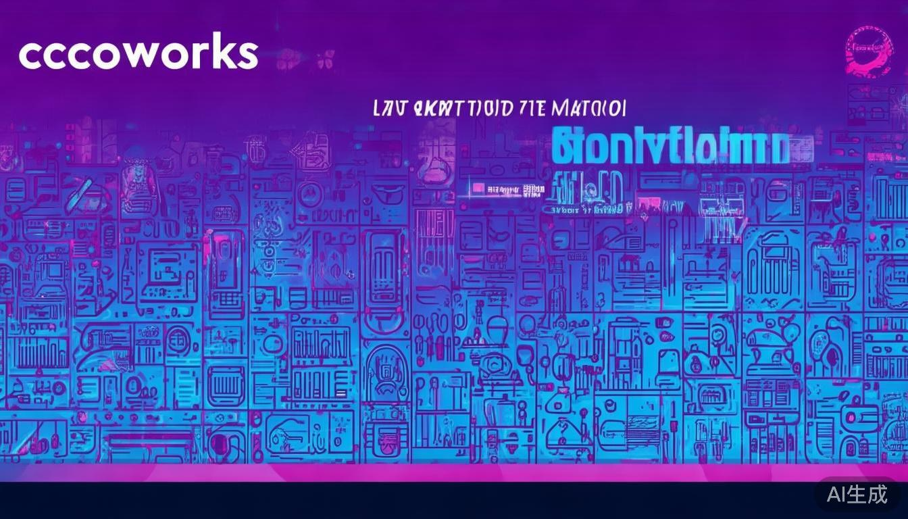

第 14 章 · AI与未来社会：2035年的世界
预测未来最好的方式是创造未来。但基于当前趋势，我们可以勾勒出2035年AI社会的轮廓。这不是科幻，这是正在发生的未来。
工作形态
2035年的工作将呈现以下特征：
- 人机协作成为常态：每个知识工作者都有一个或多个AI助手
- 四天工作制普及：AI提升效率，人类有更多闲暇
- 远程+混合办公：AI消除了地理限制，工作更灵活
- 技能快速迭代：学习成为终身需求，大学教育从「一次性」变为「持续更新」
教育变革

- 个性化教育实现：AI为每个学生定制学习路径
- 教师角色转变：从知识传授者变为学习引导者
- 学历贬值，能力升值：实际技能比文凭更重要
- 虚拟现实课堂：VR/AR+AI，沉浸式学习体验
医疗健康
- 预防医学为主：AI提前预测疾病风险，从「治病」到「防病」
- 个性化治疗：基于基因组学的精准医疗普及
- AI医生助手：每个医生都有AI辅助诊断
- 远程医疗普及：优质医疗资源不再受地域限制
交通出行
- 自动驾驶普及：L4级自动驾驶在限定区域商业化
- 共享出行为主：私家车减少，按需出行成为主流
- 空中交通兴起：eVTOL（电动垂直起降飞行器）开始运营
社会挑战
2035年的社会也将面临新挑战：
- 数字鸿沟：会用AI和不会用AI的人差距拉大
- 隐私保护：AI监控能力增强，隐私保护更困难
- 信息真实性：深度伪造泛滥，如何辨别真伪？
- 社会公平：AI红利如何公平分配？
中国角色
2035年的中国AI图景：
- 技术领先：在AI应用层面全球领先，基础研究与世界顶尖并跑
- 产业融合：AI与制造业深度融合，智能制造全球标杆
- 治理创新：探索符合中国国情的AI治理模式
- 全球贡献：中国AI技术和标准走向世界
本章要点
- 2035年的AI将深入社会每个角落，改变工作、教育、医疗、交通
- 技术本身是中性的，关键在于如何引导其发展方向
- 个人、企业、国家都需要为AI时代做好准备
- 未来不是等待发生的，而是需要主动创造的
出处声明
本文由本站 AI 创作整理，内容基于公开知识/官方资料提炼，信息请以官方发布为准； 涉及的历史事件、产品与数据均可在公开渠道查证，本站不编造来源。引用外部内容遵循其原始许可，标注出处即可。